ورش ودورات
هاكاثون الابتكار الفضائي العربي (ASI Hack)
برعاية الاتحاد، وتنظيم فريق كاسيوبيا مصر بالشراكة مع فريق الفضاء العربي.
التفاصيلمحاضرات أسبوعية · مؤتمرات · ورش · رصد
محاضرات أسبوعية حضورياً وعبر الإنترنت، ومؤتمرات عربية ودولية، وورش ودورات، وأمسيات رصد للجمهور.
لا توجد فعاليات قادمة معلنة حالياً. تُعرض هنا أحدث فعاليات الاتحاد، وتظهر الفعاليات القادمة في أعلى الصفحة فور الإعلان عنها.
مؤتمرات
تحت رعاية الاتحاد والجامعة الأردنية: «تعزيز علوم الفضاء والفلك من أجل مستقبل مستدام».
التفاصيلورش ودورات
تقدّمها المدرّبة الفلكية دلال اللالا، لطلبة الجامعات فما فوق.
التفاصيلمحاضرات وندوات
جلسة شبابية مع نجمة الأردن لأبحاث علوم الفضاء.
التفاصيلمحاضرات وندوات
برعاية رئيس الاتحاد أ.د. حميد مجول النعيمي.
التفاصيلمؤتمرات
بمناسبة مرور 25 عاماً على تأسيس الاتحاد، بمشاركة أكثر من 300 مشارك وعرض أكثر من 240 ورقة بحثية.
مؤتمرات
بمشاركة علماء وباحثين من أكثر من 37 دولة، ومناقشة أكثر من 60 ورقة علمية.
لا توجد فعاليات من هذا النوع.
28 صفحة عن المؤتمرات العربية والمؤتمر الفلكي الإسلامي والملتقيات والندوات.
225 منشوراً عن المحاضرات والورش والمؤتمرات
 محاضرات وفعاليات · المؤتمر الدولي للطاقة المتجددة للنفط والغاز وتغير المناخ (IREGOCCC)
محاضرات وفعاليات · المؤتمر الدولي للطاقة المتجددة للنفط والغاز وتغير المناخ (IREGOCCC)
 محاضرات وفعاليات · ما الذي نتعلمه من إنتاج الهيليوم في الكون؟!
محاضرات وفعاليات · ما الذي نتعلمه من إنتاج الهيليوم في الكون؟!
 محاضرات وفعاليات · “الفتيات والنساء في العلوم والفلك “
محاضرات وفعاليات · “الفتيات والنساء في العلوم والفلك “
 محاضرات وفعاليات · تحت رعاية رئيس الاتحاد العربي لعلوم الفضاء والفلك ومدير جامعة الشارقة الأستاذ الدكتور…
محاضرات وفعاليات · تحت رعاية رئيس الاتحاد العربي لعلوم الفضاء والفلك ومدير جامعة الشارقة الأستاذ الدكتور…
 محاضرات وفعاليات · اثر الهبات الشمسية والكوارث الكونية والبيئية في زيادة التغيرات المناخية
محاضرات وفعاليات · اثر الهبات الشمسية والكوارث الكونية والبيئية في زيادة التغيرات المناخية
 محاضرات وفعاليات · التقويم المصري القديم
محاضرات وفعاليات · التقويم المصري القديم
 محاضرات وفعاليات · الاتحاد العربي لعلوم الفضاء والفلك والجمعية الفلكية الأردنية ينضمون بالتعاون مع المركز الإقليمي ندوة علمية حول دخول مسبار الامل مدار كوكب المريخ.
محاضرات وفعاليات · الاتحاد العربي لعلوم الفضاء والفلك والجمعية الفلكية الأردنية ينضمون بالتعاون مع المركز الإقليمي ندوة علمية حول دخول مسبار الامل مدار كوكب المريخ.
 محاضرات وفعاليات · مُشاهد الشمس -مدخل إلى الرصد والاستكشاف –
محاضرات وفعاليات · مُشاهد الشمس -مدخل إلى الرصد والاستكشاف –
 محاضرات وفعاليات · نُقرب الفضاء إليك
محاضرات وفعاليات · نُقرب الفضاء إليك
 محاضرات وفعاليات · الملتقي الفلكي العربي 2024
محاضرات وفعاليات · الملتقي الفلكي العربي 2024
 محاضرات وفعاليات · دعوة لحضور الفعالية السنوية ليوم الكويكبات العالمي
محاضرات وفعاليات · دعوة لحضور الفعالية السنوية ليوم الكويكبات العالمي
 محاضرات وفعاليات · دعوة لحضور محاضرة
محاضرات وفعاليات · دعوة لحضور محاضرة
 محاضرات وفعاليات · محاضرة الزلازل
محاضرات وفعاليات · محاضرة الزلازل
 محاضرات وفعاليات · يسر أمين عام الاتحاد العربي لعلوم الفضاء والفلك والمكتب الإقليمي لتنمية الفلك في المنطقة…
محاضرات وفعاليات · يسر أمين عام الاتحاد العربي لعلوم الفضاء والفلك والمكتب الإقليمي لتنمية الفلك في المنطقة…
 محاضرات وفعاليات · محاضرة التعليم والتوعية الفلكية
محاضرات وفعاليات · محاضرة التعليم والتوعية الفلكية
 محاضرات وفعاليات · دعوة لحضور ورشة متخصصة في Cube-sat
محاضرات وفعاليات · دعوة لحضور ورشة متخصصة في Cube-sat
 محاضرات وفعاليات · دعوة لحضور محاضرة مبسطة
محاضرات وفعاليات · دعوة لحضور محاضرة مبسطة
 محاضرات وفعاليات · محاضرة ” العناصر أصلها ومظاهر تكوينها “
محاضرات وفعاليات · محاضرة ” العناصر أصلها ومظاهر تكوينها “
 محاضرات وفعاليات · محاضرة تلسكوبات الرصد البصري “رصد القمر”
محاضرات وفعاليات · محاضرة تلسكوبات الرصد البصري “رصد القمر”
 محاضرات وفعاليات · دعوة لحضور محاضرة تلسكوبات الرصد البصري “رصد الشمس”
محاضرات وفعاليات · دعوة لحضور محاضرة تلسكوبات الرصد البصري “رصد الشمس”
 محاضرات وفعاليات · مناقشة كتاب “أضواء وظلال “
محاضرات وفعاليات · مناقشة كتاب “أضواء وظلال “
 محاضرات وفعاليات · محاضرة رسائل من الشمس
محاضرات وفعاليات · محاضرة رسائل من الشمس
 محاضرات وفعاليات · امين عام الاتحاد العربي لعلوم الفضاء والفلك يفتتح دورة المهارات الفلكية لجمعية نوفا الفلكية في فلسطين.
محاضرات وفعاليات · امين عام الاتحاد العربي لعلوم الفضاء والفلك يفتتح دورة المهارات الفلكية لجمعية نوفا الفلكية في فلسطين.
 محاضرات وفعاليات · دعوة لحضور محاضرة بعنوان العناصر أصلها ومظاهر تكوينها
محاضرات وفعاليات · دعوة لحضور محاضرة بعنوان العناصر أصلها ومظاهر تكوينها
 محاضرات وفعاليات · دعوة لحضور محاضرة ” تلسكوبات الرصد البصري لهواة الفلك (3)
محاضرات وفعاليات · دعوة لحضور محاضرة ” تلسكوبات الرصد البصري لهواة الفلك (3)
 محاضرات وفعاليات · دعوة لحضور محاضرة ” استعمار المريخ”
محاضرات وفعاليات · دعوة لحضور محاضرة ” استعمار المريخ”
 محاضرات وفعاليات · دعوة لحضور محاضرة تحت عنوان:المحاكاة وسيلة بين الرؤية والحساب الفلكي
محاضرات وفعاليات · دعوة لحضور محاضرة تحت عنوان:المحاكاة وسيلة بين الرؤية والحساب الفلكي
 محاضرات وفعاليات · ورشة فلكية بعنوان ” حياة النجوم” يقدمها الاتحاد في مدرسة إناث مخيم عمان الإعدادية الأولى
محاضرات وفعاليات · ورشة فلكية بعنوان ” حياة النجوم” يقدمها الاتحاد في مدرسة إناث مخيم عمان الإعدادية الأولى
 محاضرات وفعاليات · المدربة الفلكية دلال اللالا من الاتحاد العربي لعلوم الفضاء والفلك تلقي محاضرة في مدرسة خولة بنت الأزور الأساسية للبنات -لواء الرصيفة
محاضرات وفعاليات · المدربة الفلكية دلال اللالا من الاتحاد العربي لعلوم الفضاء والفلك تلقي محاضرة في مدرسة خولة بنت الأزور الأساسية للبنات -لواء الرصيفة
 محاضرات وفعاليات · دعوة لحضور المحاضرة العلمية الموسومة تحت عنوان:”آفاق البحث العلمي في هندسة الفضاء: من الإطلاق وحتى الهبوط”
محاضرات وفعاليات · دعوة لحضور المحاضرة العلمية الموسومة تحت عنوان:”آفاق البحث العلمي في هندسة الفضاء: من الإطلاق وحتى الهبوط”
 محاضرات وفعاليات · دعوة لحضور الندوة العلمية السنوية الموسومة تحت عنوان:”هلال رمضان بين الرؤية والحساب”
محاضرات وفعاليات · دعوة لحضور الندوة العلمية السنوية الموسومة تحت عنوان:”هلال رمضان بين الرؤية والحساب”
 محاضرات وفعاليات · دعوة لحضور المحاضرة الموسومة تحت عنوان: ” تلسكوبات الرصد البصري لهواة الفلك”
محاضرات وفعاليات · دعوة لحضور المحاضرة الموسومة تحت عنوان: ” تلسكوبات الرصد البصري لهواة الفلك”
 محاضرات وفعاليات · محاضرة 9 يناير 2024 – الأستاذ محمد العُبيدي ( تلسكوبات الرصد البصري لهواة الفلك)
محاضرات وفعاليات · محاضرة 9 يناير 2024 – الأستاذ محمد العُبيدي ( تلسكوبات الرصد البصري لهواة الفلك)
 محاضرات وفعاليات · الاتحاد العربي لعلوم الفضاء والفلك يفتتح العام الجديد ٢٠٢٤ بعقد الدورة الأولى بالتعاون مع جمعية القباب الفلكية تحت عنوان (المس السماء)
محاضرات وفعاليات · الاتحاد العربي لعلوم الفضاء والفلك يفتتح العام الجديد ٢٠٢٤ بعقد الدورة الأولى بالتعاون مع جمعية القباب الفلكية تحت عنوان (المس السماء)
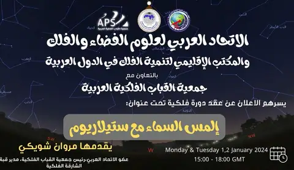
محاضرات وفعاليات · عقد دورة فلكية على منصة زووم بعنوان:إلمس السماء مع ستيلاريومTouch the Sky with Stellarium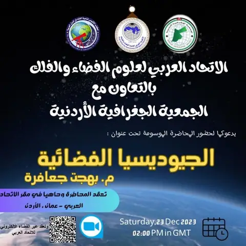
محاضرات وفعاليات · دعوة لحضور محاضرة بعنوان الجيوديسيا الفضائية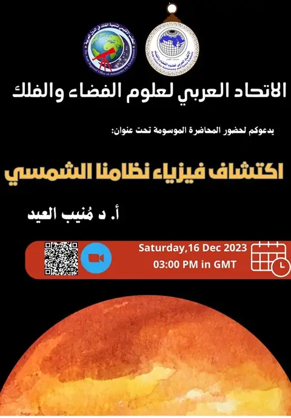
محاضرات وفعاليات · دعوة لحضور المحاضرة الموسومة تحت عنوان: اكتشاف فيزياء نظامنا الشمسي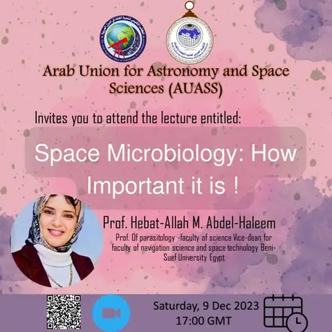
محاضرات وفعاليات · دعوة لحضور المحاضرة الموسومة تحت عنوان: علم الأحياء الدقيقة في الفضاء: ما مدى أهميته!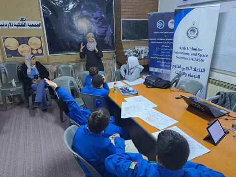
محاضرات وفعاليات · محاضرة لطلاب الصف الثاني عن “المجموعة الشمسية” قدمتها الأستاذة دلال اللالا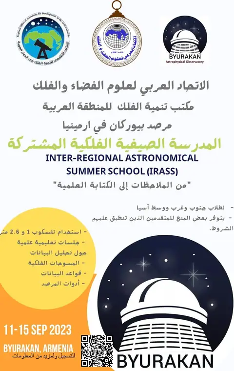
محاضرات وفعاليات · المدرسة الصيفية الفلكية المشتركة(Inter-regional Astronomical Summer School IRASS)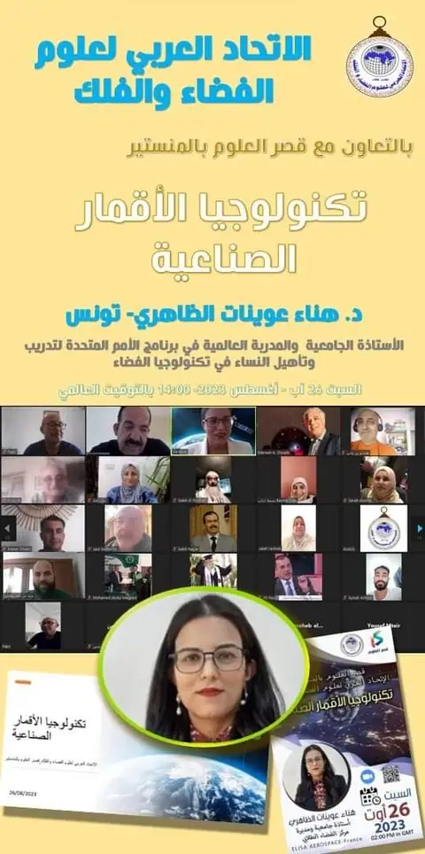
محاضرات وفعاليات · بتنظيم مشترك بين الاتحاد العربي لعلوم الفضاء والفلك وقصر العلوم بالمنستير عقدت المحاضرة العلمية القيمة والرائعة تحت عنوان: تكنولوجيا الأقمار الصناعية محاضرات وفعاليات · دعوة لحضور محاضرة علمية بعنوان: فيزياء الشفق والفجر الكاذب والفجر الصادق وألوان السماء في أوقات الصلاة: محاكاة فلكية
محاضرات وفعاليات · دعوة لحضور محاضرة علمية بعنوان: فيزياء الشفق والفجر الكاذب والفجر الصادق وألوان السماء في أوقات الصلاة: محاكاة فلكية
 محاضرات وفعاليات · ندوة آثار العجيري في علم الفلك العربي
محاضرات وفعاليات · ندوة آثار العجيري في علم الفلك العربي
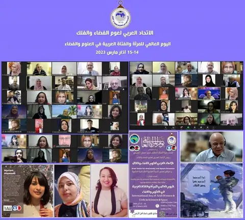
محاضرات وفعاليات · ندوة اليوم العالمي للمرأة والفتاة العربية في العلوم والفضاء محاضرات وفعاليات · ندوة هلال رمضان بين الرؤية الشرعية والحسابات الفلكية
محاضرات وفعاليات · ندوة هلال رمضان بين الرؤية الشرعية والحسابات الفلكية
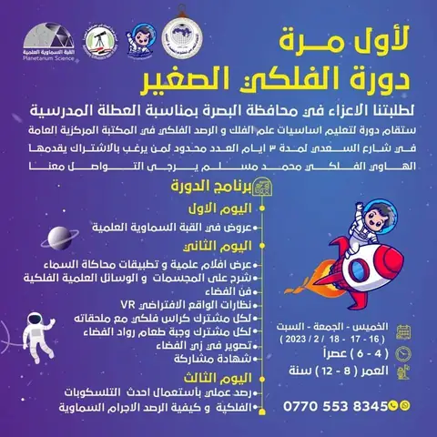
محاضرات وفعاليات · دورة الفلكي الصغير – من أرض الرافدين إلى أقصى السماء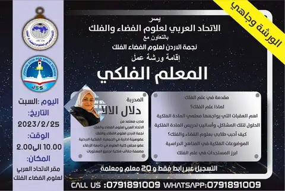
محاضرات وفعاليات · ورشة المعلم الفلكي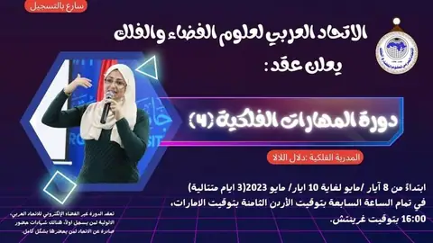
محاضرات وفعاليات · دورة المهارات الفلكية (4)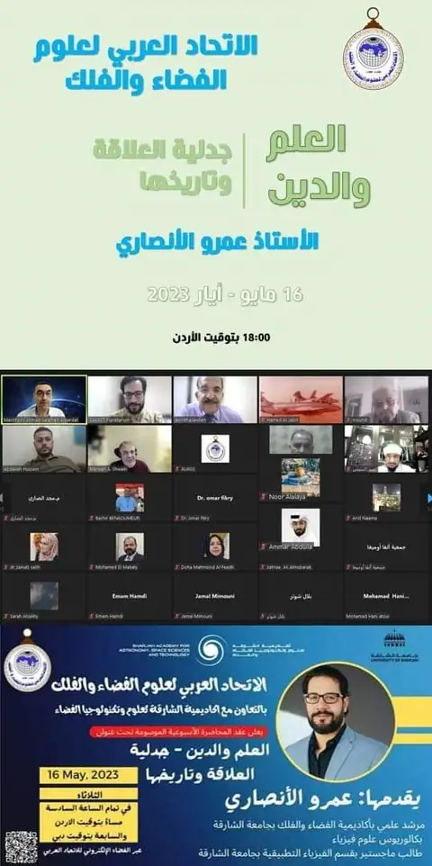
محاضرات وفعاليات · محاضرة العلم والدين – جدلية العلاقة وتاريخها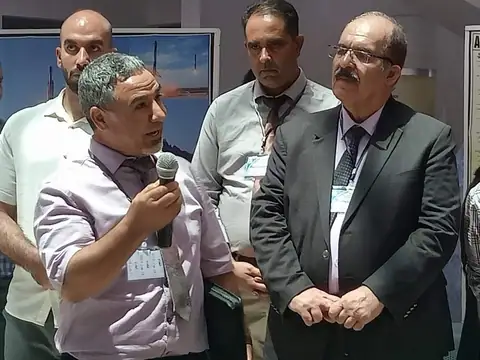
محاضرات وفعاليات · مشاركة الاتحاد في المهرجان الوطني 18 في علم الفلك الجماهيري قسنطينة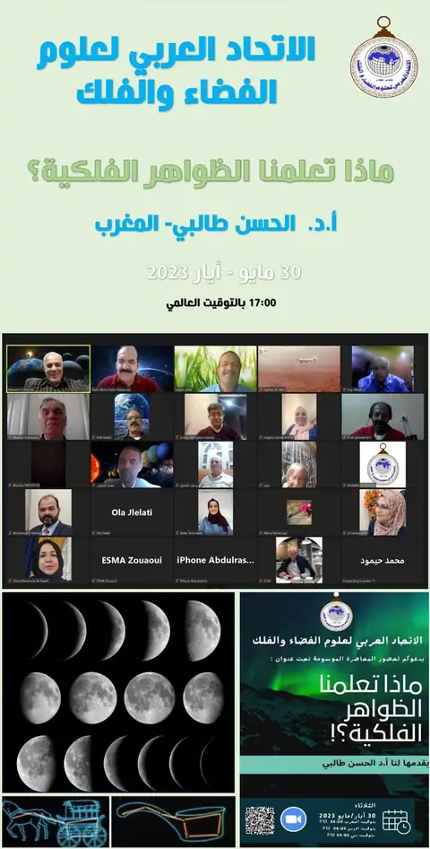
محاضرات وفعاليات · دعوة لحضور محاضرة بعنوان – ماذا تعلمنا الظواهر الفلكية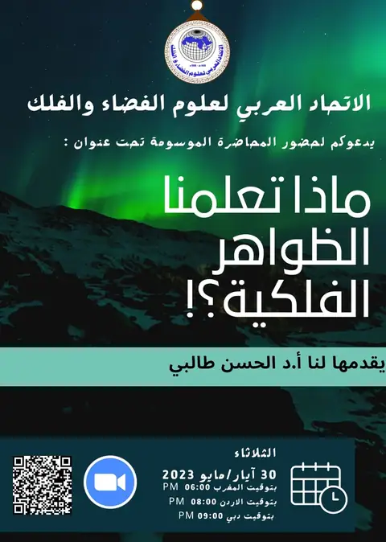
محاضرات وفعاليات · دعوة لحضور المحاضرة الموسومة تحت عنوان: ماذا تعلمنا الظواهر الفلكية؟!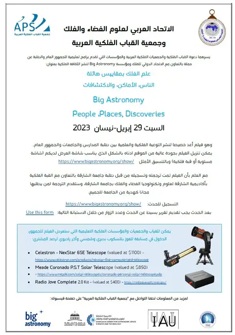
محاضرات وفعاليات · دعوة لحضور المبادرة والمسابقة الهامة والموسومة تحت عنوان علم الفلك بالمقاييس الهائلة – الناس، الأماكن، الاكتشافات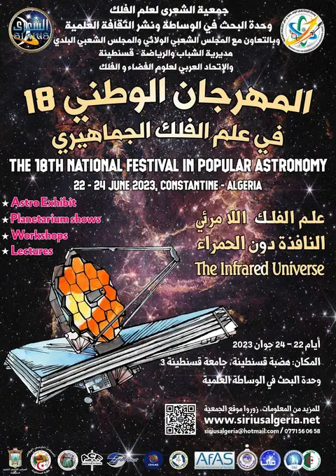
محاضرات وفعاليات · يسر الاتحاد العربي لعلوم الفضاء والفلك يدعوكم لحضور المهرجان الوطني ١٨ في علم الفلك الجماهيري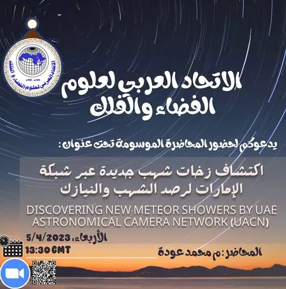
محاضرات وفعاليات · يدعوكم الاتحاد العربي لعلوم الفضاء والفلك لحضور المحاضرة الموسومة تحت عنوان: اكتشاف زخات شهب جديدة عبر شبكة الإمارات لرصد الشهب والنيازك.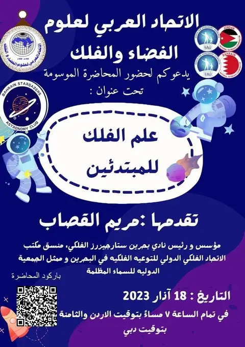
محاضرات وفعاليات · يدعوكم الاتحاد العربي لعلوم الفضاء والفلك لحضور المحاضرة الأسبوعية تحت عنوان: علم الفلك للمبتدئين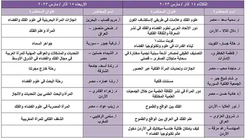
محاضرات وفعاليات · اليوم العالمي للمرأة والفتاة العربية في العلوم والفضاء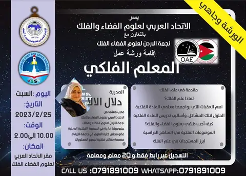
محاضرات وفعاليات · ورشة بعنوان “المعلم الفلكي”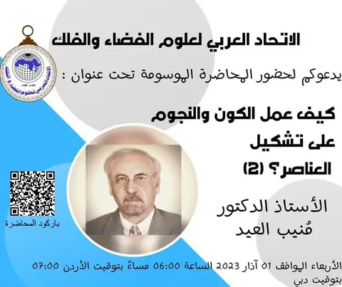
محاضرات وفعاليات · دعوة لحضور المحاضرة الموسومة بعنوان:( كيف عمل الكون والنجوم على تشكيل العناصر؟!)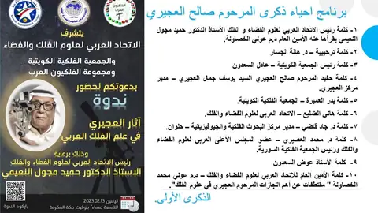
محاضرات وفعاليات · دعوة لحضور الندوة الموسومة آثار العجيري في علم الفلك العربي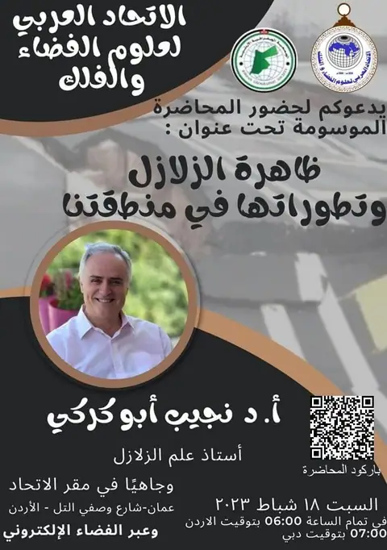
محاضرات وفعاليات · يدعوكم الاتحاد العربي لعلوم الفضاء والفلك والجمعية الجغرافية الأردنية لحضور المحاضرة العلمية تحت عنوان: ظاهرة الزلازل وتطوراتها في منطقتنا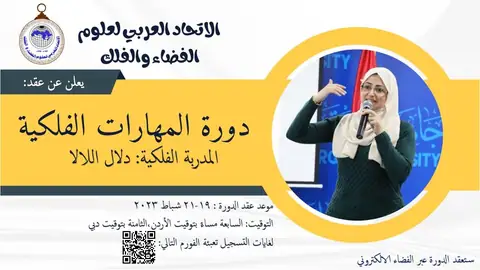
محاضرات وفعاليات · إعلان دورة جديدة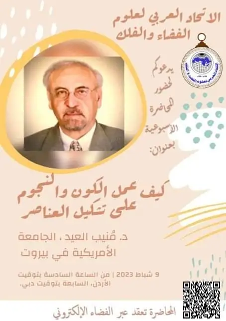
محاضرات وفعاليات · دعوة لحضور محاضرة بعنوان كيف عمل الكون والنجوم على تشكيل العناصر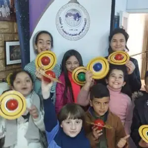
محاضرات وفعاليات · دورة الفلكي الصغير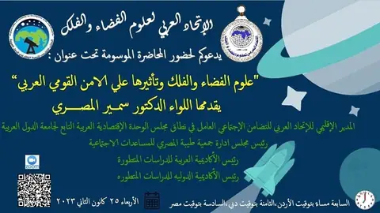
محاضرات وفعاليات · دعوة لحضور محاضرة تحت عنوان: علوم الفضاء والفلك وتأثيرها على الأمن القومي”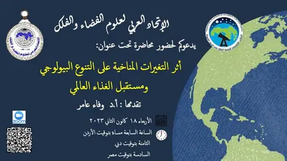
محاضرات وفعاليات · دعوة لحضور محاضرة بعنوان:أثر التغيرات المُناخية على التنوع البيولوجي ومستقبل الغذاء العالمي. محاضرات وفعاليات · برعاية الأمين العام للاتحاد العربي لعلوم الفضاء والفلك الدكتور عوني الخصاونة ومشاركة ثلة من الفلكيين والفلكيات العرب
محاضرات وفعاليات · برعاية الأمين العام للاتحاد العربي لعلوم الفضاء والفلك الدكتور عوني الخصاونة ومشاركة ثلة من الفلكيين والفلكيات العرب
 محاضرات وفعاليات · دعوة لحضور المحاضرة تحت عنوان الجمعية التونسية لعلوم الفلك التاريخ والمستقبل
محاضرات وفعاليات · دعوة لحضور المحاضرة تحت عنوان الجمعية التونسية لعلوم الفلك التاريخ والمستقبل
 محاضرات وفعاليات · دعوة لمحاضرة بعنوان “علوم الفلك بين الواقع والطموح”
محاضرات وفعاليات · دعوة لمحاضرة بعنوان “علوم الفلك بين الواقع والطموح”
 محاضرات وفعاليات · المؤتمر الدولي الفلكي يختتم فعالياته في جامعة آل البيت
محاضرات وفعاليات · المؤتمر الدولي الفلكي يختتم فعالياته في جامعة آل البيت
 محاضرات وفعاليات · الاتحاد العربي لعلوم الفضاء والفلك بالتعاون مع منظمة الفضاء لمنطقة آسيا والباسيفيك وبالشراكة مع جامعة آل البيت وجامعة الشارقة تنظم المؤتمر العالمي الأول تحت عنوان “استكشاف الفضاء: القمر وما بعده”٢٠٢٢
محاضرات وفعاليات · الاتحاد العربي لعلوم الفضاء والفلك بالتعاون مع منظمة الفضاء لمنطقة آسيا والباسيفيك وبالشراكة مع جامعة آل البيت وجامعة الشارقة تنظم المؤتمر العالمي الأول تحت عنوان “استكشاف الفضاء: القمر وما بعده”٢٠٢٢
 محاضرات وفعاليات · فعالية رصد كسوف الشمس الجزئي
محاضرات وفعاليات · فعالية رصد كسوف الشمس الجزئي
 محاضرات وفعاليات · دعوة لحضور محاضرة عن (فوائد وتكنولوجيا الفضاء والتحديات والاتجاه في عصر الصناعة الرابعة)
محاضرات وفعاليات · دعوة لحضور محاضرة عن (فوائد وتكنولوجيا الفضاء والتحديات والاتجاه في عصر الصناعة الرابعة)
 محاضرات وفعاليات · احتفالية أسبوع الفضاء العالمي 2022 “الفضاء والاستدامة”
محاضرات وفعاليات · احتفالية أسبوع الفضاء العالمي 2022 “الفضاء والاستدامة”
 محاضرات وفعاليات · محاضرة بعنوان (تلسكوب جيمس ويب)
محاضرات وفعاليات · محاضرة بعنوان (تلسكوب جيمس ويب)
 محاضرات وفعاليات · محاضرة تحت عنوان (مهارات في برنامج ستيلاريوم)
محاضرات وفعاليات · محاضرة تحت عنوان (مهارات في برنامج ستيلاريوم)
 محاضرات وفعاليات · جامعة الشارقة تستضيف المؤتمر العربي الرابع عشر في علوم الفضاء والفلك.
محاضرات وفعاليات · جامعة الشارقة تستضيف المؤتمر العربي الرابع عشر في علوم الفضاء والفلك.
 محاضرات وفعاليات · دعوة لحضور الملتقى الافتراضي الفلكي الأول للمعلمين
محاضرات وفعاليات · دعوة لحضور الملتقى الافتراضي الفلكي الأول للمعلمين
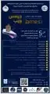
محاضرات وفعاليات · دعوة لحضور البث المباشر لإطلاق التلسكوب الفضائي جيمس ويب من جزيرة غويانا الفرنسية يوم السبت 25/12/2021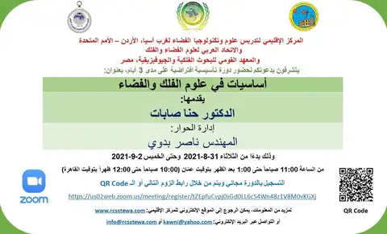
محاضرات وفعاليات · إعلان عقد دورة بعنوان “أساسيات علوم الفضاء والفلك ” – في الفترة من 31/8/2021 – 2/9/2021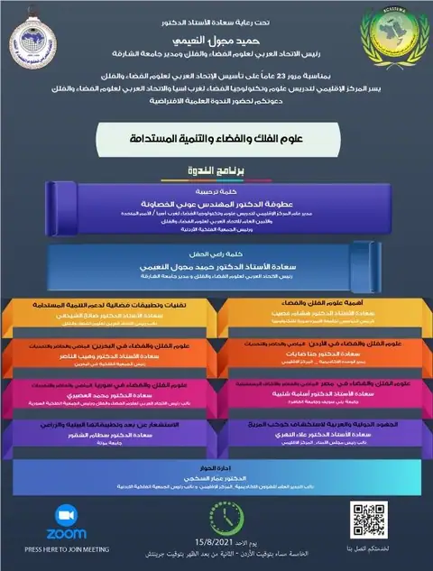
محاضرات وفعاليات · دعوة لحضور ندوة علمية بعنوان “علوم الفلك والفضاء والتنمية المستدامة”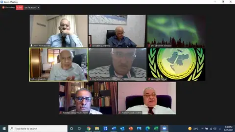
محاضرات وفعاليات · ندوة علمية بعنوان: علوم الفلك والفضاء والتنمية المستدامة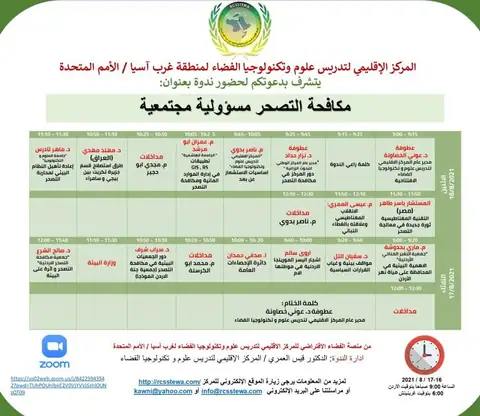
محاضرات وفعاليات · دعوة لحضور ندوة علمية بعنوان ” مكافحة التصحر مسؤولية مجتمعية “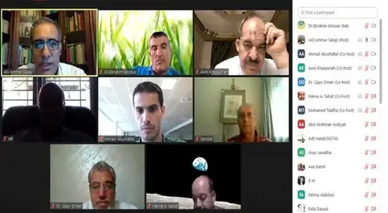
محاضرات وفعاليات · الاتحاد العربي لعلوم الفضاء والفلك ينظم ندوة علمية بعنوان “اليوم الدولي للكويكبات”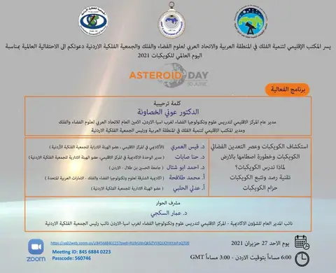
محاضرات وفعاليات · دعوة لحضور ندوة افتراضية بمناسبة اليوم العالمي للكويكبات 2021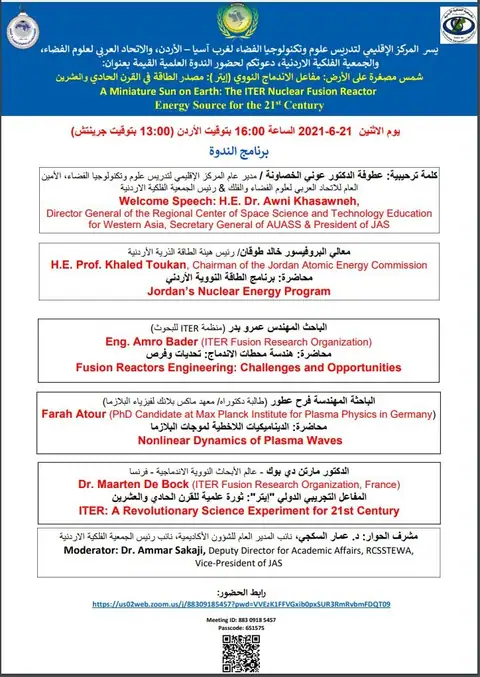
محاضرات وفعاليات · دعوة لحضور الندوة العلمية القيمة بعنوان:- شمس مصغرة على الأرض: مفاعل الاندماج النووي (إيتر): مصدر الطاقة في القرن الحادي والعشرين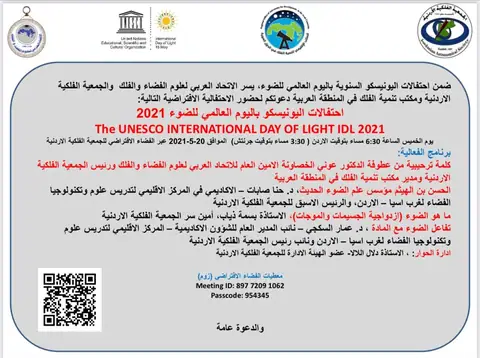
محاضرات وفعاليات · دعوة لحضور الاحتفالية الافتراضية التالية: احتفالات اليونيسكو باليوم العالمي للضوء 2021 The UNESCO INTERNATIONAL DAY OF LIGHT IDL 2021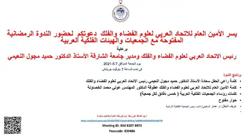
محاضرات وفعاليات · دعوة لحضور الندوة الرمضانية المفتوحة مع الجمعيات والهيئات الفلكية العربية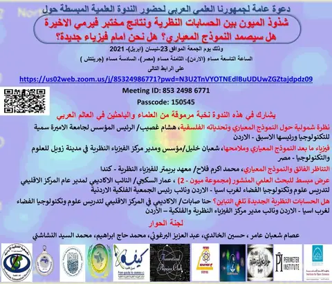
محاضرات وفعاليات · دعوة لحضور ندوة علمية بعنوان – شذوذ الميون بين الحسابات النظرية ونتائج مختبر فيرمي الأخيرة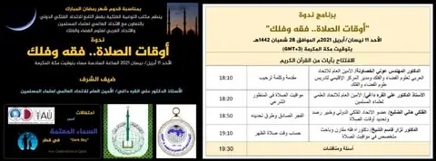
محاضرات وفعاليات · دعوة لحضور ندوة بعنوان أوقات الصلاة فقه وفلك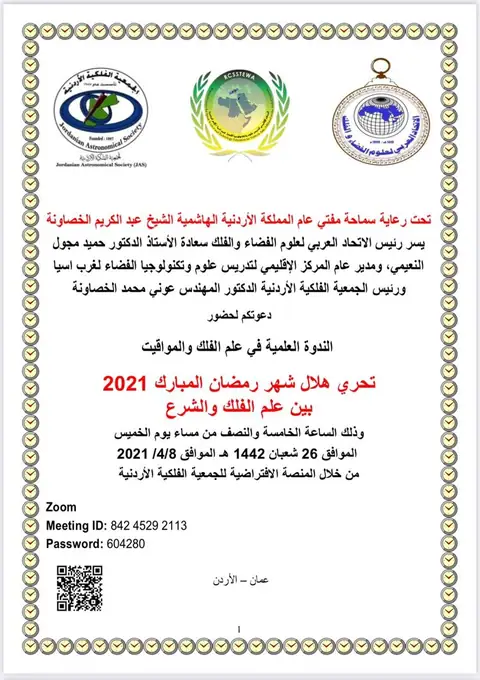
محاضرات وفعاليات · ندوة تحري هلال شهر رمضان المبارك 2021 بين علم الفلك والشرع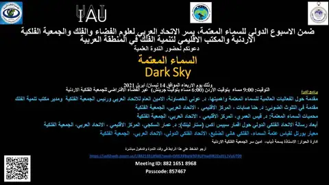
محاضرات وفعاليات · الرابط المباشر لندوة السماء المعتمة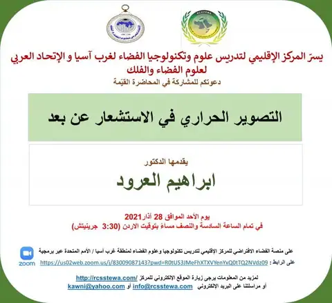
محاضرات وفعاليات · دعوة لحضور محاضرة بعنوان التصوير الحراري في الاستشعار عن بعد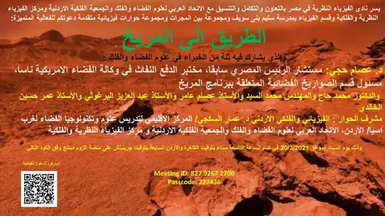
محاضرات وفعاليات · دعوة لحضور محاضرة علمية بعنوان “الطريق إلى المريخ”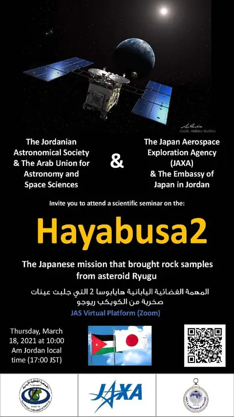
محاضرات وفعاليات · دعوة لحضور الندوة العلمية حول المهمة الفضائية اليابانية “هايابوسا 2”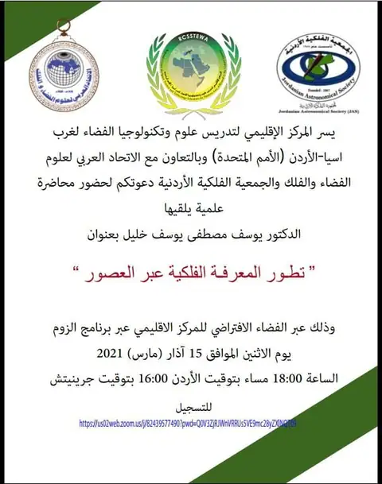
محاضرات وفعاليات · دعوة لحضور محاضرة علمية يلقيها الدكتور يوسف مصطفى يوسف خليل بعنوان ” تطور المعرفة الفلكية عبر العصور “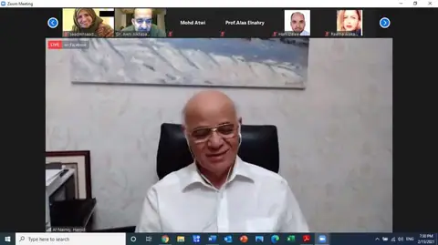
محاضرات وفعاليات · فعالية الاتحاد العربي في اليوم العالمي للنساء والفتيات الفلكيات ٢٠٢١ International day for women and girls in astronomy 2021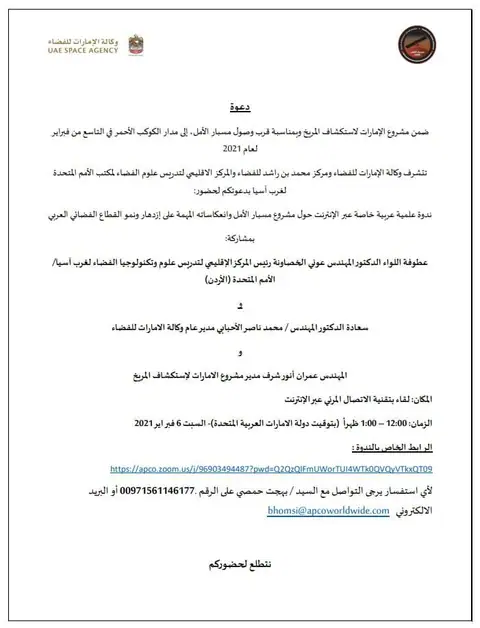
محاضرات وفعاليات · ندوة علمية عربية خاصة عبر الإنترنت حول مشروع مسبار الأمل وانعكاساته المهمة على ازدهار ونمو القطاع الفضائي العربي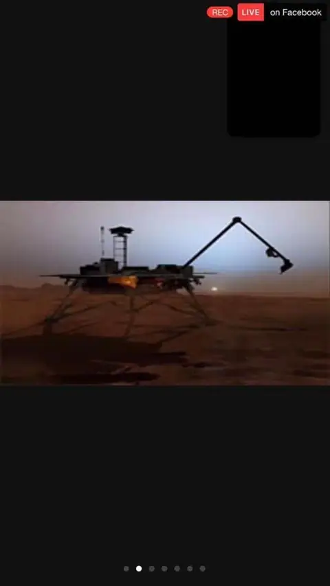
محاضرات وفعاليات · ندوة دخول مسبار الأمل للمجال الجذبي للمريخ بنجاح محاضرات وفعاليات · الاتحاد الفلكي الدولي يعقد اجتماعه الخامس لدول الشرق الأوسط وأفريقيا بالتزامن مع انطلاق مؤتمره حول تدريس وأبحاث الفلك للأجيال القادمة
محاضرات وفعاليات · الاتحاد الفلكي الدولي يعقد اجتماعه الخامس لدول الشرق الأوسط وأفريقيا بالتزامن مع انطلاق مؤتمره حول تدريس وأبحاث الفلك للأجيال القادمة
 محاضرات وفعاليات · الاجتماع الخامس لمنطقة الشرق الأوسط وأفريقيا / 10-12 نوفمبر 2020 /
محاضرات وفعاليات · الاجتماع الخامس لمنطقة الشرق الأوسط وأفريقيا / 10-12 نوفمبر 2020 /
 محاضرات وفعاليات · إعلان مؤتمر MEARIM (10-12) نوفمبر 2020
محاضرات وفعاليات · إعلان مؤتمر MEARIM (10-12) نوفمبر 2020
 محاضرات وفعاليات · دعوة عامة – حضور المحاضرة العلمية ” المادة المظلمة تطور الفكرة والأدلة وخصائص الجاذبية والعديد من التفسيرات “
محاضرات وفعاليات · دعوة عامة – حضور المحاضرة العلمية ” المادة المظلمة تطور الفكرة والأدلة وخصائص الجاذبية والعديد من التفسيرات “
 محاضرات وفعاليات · دعوة عامة – حضور المحاضرة العلمية ” دراسة راديوية لبقايا المستعرات العظمى في سحابة ماجلان “
محاضرات وفعاليات · دعوة عامة – حضور المحاضرة العلمية ” دراسة راديوية لبقايا المستعرات العظمى في سحابة ماجلان “
 محاضرات وفعاليات · دعوة للمشاركة في المخيم العربي الافتراضي لعلوم الفضاء والفلك (3 – 5) سبتمبر – أيلول 2020
محاضرات وفعاليات · دعوة للمشاركة في المخيم العربي الافتراضي لعلوم الفضاء والفلك (3 – 5) سبتمبر – أيلول 2020
 محاضرات وفعاليات · دعوة لحضور المحاضرة العلمية “نمذجة التغيرات المكانية والزمانية للجزر الحرارية في المدن والعوامل المؤثرة باستخدام الاستشعار عن بعد ونظم المعلومات الجغرافية” يقدمها الدكتور جاسم محمد علي
محاضرات وفعاليات · دعوة لحضور المحاضرة العلمية “نمذجة التغيرات المكانية والزمانية للجزر الحرارية في المدن والعوامل المؤثرة باستخدام الاستشعار عن بعد ونظم المعلومات الجغرافية” يقدمها الدكتور جاسم محمد علي
 محاضرات وفعاليات · دعوة لحضور المحاضرة العلمية “إعداد وإنتاج الخرائط الرقمية” يقدمها الدكتور سطام الشقور
محاضرات وفعاليات · دعوة لحضور المحاضرة العلمية “إعداد وإنتاج الخرائط الرقمية” يقدمها الدكتور سطام الشقور
 محاضرات وفعاليات · دعوة لحضور ورشة بعنوان ” النجوم الثنائية والمتعددة: من الأرصاد إلى التقديرات”
محاضرات وفعاليات · دعوة لحضور ورشة بعنوان ” النجوم الثنائية والمتعددة: من الأرصاد إلى التقديرات”
 محاضرات وفعاليات · الموعد الثالث لمسبار الأمل حسب آخر تحديث من وكالة الإمارات للفضاء
محاضرات وفعاليات · الموعد الثالث لمسبار الأمل حسب آخر تحديث من وكالة الإمارات للفضاء
 محاضرات وفعاليات · محاضرة بعنوان: الانفجار الكوني العظيم
محاضرات وفعاليات · محاضرة بعنوان: الانفجار الكوني العظيم
 محاضرات وفعاليات · دعوة لحضور البث الحي والمباشر لمتابعة إطلاق المسبار الفضائي الإماراتي لاستكشاف الكوكب الأحمر مسبار الأمل The Hope Probe
محاضرات وفعاليات · دعوة لحضور البث الحي والمباشر لمتابعة إطلاق المسبار الفضائي الإماراتي لاستكشاف الكوكب الأحمر مسبار الأمل The Hope Probe
 محاضرات وفعاليات · دعوة عامة – محاضرة بعنوان “الانفجار الكوني العظيم أم التطور الكوني في ضوء جائزة نوبل في الفيزياء 2019”
محاضرات وفعاليات · دعوة عامة – محاضرة بعنوان “الانفجار الكوني العظيم أم التطور الكوني في ضوء جائزة نوبل في الفيزياء 2019”
 محاضرات وفعاليات · دعوة عامة – ورشة عمل المتخصصة بعنوان: تكنولوجيا وتطبيقات أنظمة الملاحة عبر الأقمار الصناعية وخاصة نظام الملاحة الفضائي الصيني بيدو في ضوء جائحة كورونا
محاضرات وفعاليات · دعوة عامة – ورشة عمل المتخصصة بعنوان: تكنولوجيا وتطبيقات أنظمة الملاحة عبر الأقمار الصناعية وخاصة نظام الملاحة الفضائي الصيني بيدو في ضوء جائحة كورونا
 محاضرات وفعاليات · دعوة عامة – ورشة علمية بمناسبة اليوم العالمي للنيازك
محاضرات وفعاليات · دعوة عامة – ورشة علمية بمناسبة اليوم العالمي للنيازك
 محاضرات وفعاليات · دعوة عامة – محاضرة مشتركة بعنوان “القواعد القانونية الدولية لحماية بيئة الفضاء” و “المسؤولية المدنية لنظام GNSS “
محاضرات وفعاليات · دعوة عامة – محاضرة مشتركة بعنوان “القواعد القانونية الدولية لحماية بيئة الفضاء” و “المسؤولية المدنية لنظام GNSS “
 محاضرات وفعاليات · دعوة إلى فعالية كسوف الشمس الجزئي في جبل القلعة
محاضرات وفعاليات · دعوة إلى فعالية كسوف الشمس الجزئي في جبل القلعة
 محاضرات وفعاليات · دعوة عامة – محاضرة بعنوان “المجرات النشطة والكوازارات “
محاضرات وفعاليات · دعوة عامة – محاضرة بعنوان “المجرات النشطة والكوازارات “
 محاضرات وفعاليات · ورشة عمل بعنوان ” GNSS Reflections and its Remote Sensing Applications “
محاضرات وفعاليات · ورشة عمل بعنوان ” GNSS Reflections and its Remote Sensing Applications “
 محاضرات وفعاليات · اجتماع المجموعة العربية للتعاون الفضائي لمناقشة مستجدات القمر الصناعي 813، وميثاق المجموعة العربية
محاضرات وفعاليات · اجتماع المجموعة العربية للتعاون الفضائي لمناقشة مستجدات القمر الصناعي 813، وميثاق المجموعة العربية
 محاضرات وفعاليات · دعوة – محاضرة بعنوان “اكتشاف نيزك جديد بتركيب مميز (غير اعتيادي) في الأردن “
محاضرات وفعاليات · دعوة – محاضرة بعنوان “اكتشاف نيزك جديد بتركيب مميز (غير اعتيادي) في الأردن “
 محاضرات وفعاليات · دعوة عامة – محاضرة بعنوان “رصد الأقمار الصناعية بالليزر من مصر “
محاضرات وفعاليات · دعوة عامة – محاضرة بعنوان “رصد الأقمار الصناعية بالليزر من مصر “
 محاضرات وفعاليات · ورشة عمل بعنوان “GNSS APPLICATIONS”
محاضرات وفعاليات · ورشة عمل بعنوان “GNSS APPLICATIONS”
 محاضرات وفعاليات · دعوة عامة – محاضرة بعنوان”مزولة الجامع الاموي بين ابن الشاطر والطنطاوي”
محاضرات وفعاليات · دعوة عامة – محاضرة بعنوان”مزولة الجامع الاموي بين ابن الشاطر والطنطاوي”
 محاضرات وفعاليات · دعوة عامة – محاضرة بعنوان “مراقبة نوعية المياه من خلال الاستشعار عن بعد تم تنفيذه على بحيرة القرعون في لبنان”
محاضرات وفعاليات · دعوة عامة – محاضرة بعنوان “مراقبة نوعية المياه من خلال الاستشعار عن بعد تم تنفيذه على بحيرة القرعون في لبنان”
 محاضرات وفعاليات · الاجتماع الرابع لممثلي الدول الأعضاء في المجموعة العربية للتعاون الفضائي
محاضرات وفعاليات · الاجتماع الرابع لممثلي الدول الأعضاء في المجموعة العربية للتعاون الفضائي
 محاضرات وفعاليات · دعوة عامة – محاضرة بعنوان “علم الفلك من أجل التنمية في عهد 19-COVID “
محاضرات وفعاليات · دعوة عامة – محاضرة بعنوان “علم الفلك من أجل التنمية في عهد 19-COVID “
 محاضرات وفعاليات · ورشة عمل بعنوان ” أنظمة الملاحة الفضائية العالمية”
محاضرات وفعاليات · ورشة عمل بعنوان ” أنظمة الملاحة الفضائية العالمية”
 محاضرات وفعاليات · دعوة عامة – محاضرة بعنوان ” محاضرة تعريفية عن الهيئة القومية للاستشعار “
محاضرات وفعاليات · دعوة عامة – محاضرة بعنوان ” محاضرة تعريفية عن الهيئة القومية للاستشعار “
 محاضرات وفعاليات · محاضرة الثقوب السوداء وموجات الجاذبية أ.د.شوقي الدلال
محاضرات وفعاليات · محاضرة الثقوب السوداء وموجات الجاذبية أ.د.شوقي الدلال
 محاضرات وفعاليات · دعوة عامة – محاضرة بعنوان “كيفية التعرف إلى مكونات الأغلفة الجوية للكواكب الخارجية”
محاضرات وفعاليات · دعوة عامة – محاضرة بعنوان “كيفية التعرف إلى مكونات الأغلفة الجوية للكواكب الخارجية”
 محاضرات وفعاليات · دعوة – عامة “مشروع ويلفرم الفيزيائي: مشروع لإيجاد النظرية الأساسية في الفيزياء”
محاضرات وفعاليات · دعوة – عامة “مشروع ويلفرم الفيزيائي: مشروع لإيجاد النظرية الأساسية في الفيزياء”
 محاضرات وفعاليات · الاجتماع الخامس لمنطقة الشرق الأوسط وأفريقيا / 17-15 سبتمبر 2020
محاضرات وفعاليات · الاجتماع الخامس لمنطقة الشرق الأوسط وأفريقيا / 17-15 سبتمبر 2020
 محاضرات وفعاليات · دعوة عامة – محاضرة بعنوان “Hubble Space Telescope (HST): 30 Years of Exploring the Universe”
محاضرات وفعاليات · دعوة عامة – محاضرة بعنوان “Hubble Space Telescope (HST): 30 Years of Exploring the Universe”
 محاضرات وفعاليات · دعوة عامة – محاضرة بعنوان “تكنولوجيا الفضاء في دراسة التغير المناخي”
محاضرات وفعاليات · دعوة عامة – محاضرة بعنوان “تكنولوجيا الفضاء في دراسة التغير المناخي”
 محاضرات وفعاليات · ندوة علمية بعنوان “تحري شهر رمضان الكريم بين الشرع وعلم الفلك”
محاضرات وفعاليات · ندوة علمية بعنوان “تحري شهر رمضان الكريم بين الشرع وعلم الفلك”
 محاضرات وفعاليات · ورشة متخصصة في البيانات الضخمة وتطبيقاتها الفيزيائية
محاضرات وفعاليات · ورشة متخصصة في البيانات الضخمة وتطبيقاتها الفيزيائية
 محاضرات وفعاليات · ورشة متخصصة في قانون الفضاء وتطبيقاته
محاضرات وفعاليات · ورشة متخصصة في قانون الفضاء وتطبيقاته
 محاضرات وفعاليات · دعوة لرصد الكسوف الحلقي في صلالة 26/12/2019
محاضرات وفعاليات · دعوة لرصد الكسوف الحلقي في صلالة 26/12/2019
 محاضرات وفعاليات · لقاء خاص مع رائد الفضاء الإماراتي هزاع المنصوري
محاضرات وفعاليات · لقاء خاص مع رائد الفضاء الإماراتي هزاع المنصوري
 محاضرات وفعاليات · « بث مباشر من الفضاء »
محاضرات وفعاليات · « بث مباشر من الفضاء »
 محاضرات وفعاليات · تخريج دورة الفلكي الصغير
محاضرات وفعاليات · تخريج دورة الفلكي الصغير
 محاضرات وفعاليات · البروفسور نضال قسوم قدم محاضرة عن أبحاث طلبته وبعض منها نشر في مجلات عالمية مرموقة
محاضرات وفعاليات · البروفسور نضال قسوم قدم محاضرة عن أبحاث طلبته وبعض منها نشر في مجلات عالمية مرموقة
 محاضرات وفعاليات · العنوان: محاضرة للبروفيسور نضال قسوم في المركز الإقليمي
محاضرات وفعاليات · العنوان: محاضرة للبروفيسور نضال قسوم في المركز الإقليمي
 محاضرات وفعاليات · محاضرة بعنوان استكشاف الكويكبات
محاضرات وفعاليات · محاضرة بعنوان استكشاف الكويكبات
 محاضرات وفعاليات · محاضرة بعنوان “مجموعات نصف القبة السماوية الجنوبية”
محاضرات وفعاليات · محاضرة بعنوان “مجموعات نصف القبة السماوية الجنوبية”
 محاضرات وفعاليات · لقاء الوداع: “هلال رمضان” قرب الزهرة…فجر السبت
محاضرات وفعاليات · لقاء الوداع: “هلال رمضان” قرب الزهرة…فجر السبت
 محاضرات وفعاليات · المدرسة الصيفية الأولى – 2019 “الفيزياء الفلكية وعلوم الفضاء”
محاضرات وفعاليات · المدرسة الصيفية الأولى – 2019 “الفيزياء الفلكية وعلوم الفضاء”
 محاضرات وفعاليات · ندوة: “الثقوب السوداء: من النظرية إلى تلسكوب أفق الحدث”
محاضرات وفعاليات · ندوة: “الثقوب السوداء: من النظرية إلى تلسكوب أفق الحدث”
 محاضرات وفعاليات · دورة القمر حول نفسه
محاضرات وفعاليات · دورة القمر حول نفسه
 محاضرات وفعاليات · ورشة الشراكة العالمية في استكشاف الفضاء والابتكار
محاضرات وفعاليات · ورشة الشراكة العالمية في استكشاف الفضاء والابتكار
 محاضرات وفعاليات · الدكتور أسامة شلبية – “البحث عن حياة خارج النظام الشمسي”
محاضرات وفعاليات · الدكتور أسامة شلبية – “البحث عن حياة خارج النظام الشمسي”
 محاضرات وفعاليات · بث مباشر من الفضاء
محاضرات وفعاليات · بث مباشر من الفضاء
 محاضرات وفعاليات · محاضرة.. حول الفلك والتنجيم بين العلم والفلسفة
محاضرات وفعاليات · محاضرة.. حول الفلك والتنجيم بين العلم والفلسفة
 محاضرات وفعاليات · “دعوة عامة” لتسمية أقمار المشتري الجديدة
محاضرات وفعاليات · “دعوة عامة” لتسمية أقمار المشتري الجديدة
 محاضرات وفعاليات · محاضرة أ. د. أسامة شلبية بعنوان “ الفلك الراديوي عين على الكون غير المرئي”
محاضرات وفعاليات · محاضرة أ. د. أسامة شلبية بعنوان “ الفلك الراديوي عين على الكون غير المرئي”
 محاضرات وفعاليات · محاضرة بعنوان البيئة الفضائية والتحديات المستقبلية للدكتور اسامة شلبية
محاضرات وفعاليات · محاضرة بعنوان البيئة الفضائية والتحديات المستقبلية للدكتور اسامة شلبية
 محاضرات وفعاليات · دعوة عامة لحضور المحاضرة العلمية “تكوين النجوم وتطورها وتركيبها” – الأستاذ الدكتور أسامة شلبية 27/1/2019
محاضرات وفعاليات · دعوة عامة لحضور المحاضرة العلمية “تكوين النجوم وتطورها وتركيبها” – الأستاذ الدكتور أسامة شلبية 27/1/2019
 محاضرات وفعاليات · دعوة عامة لحضور المحاضرة العلمية “البيئة الفضائية والتحديات الحالية” للأستاذ الدكتور أسامة شلبية 28/1/2019
محاضرات وفعاليات · دعوة عامة لحضور المحاضرة العلمية “البيئة الفضائية والتحديات الحالية” للأستاذ الدكتور أسامة شلبية 28/1/2019
 محاضرات وفعاليات · دعوة عامة لحضور المحاضرة العلمية “علم الفلك الراديوي: عين على الكون الغير المرئي” للأستاذ الدكتور أسامة شلبية 29/1/2019
محاضرات وفعاليات · دعوة عامة لحضور المحاضرة العلمية “علم الفلك الراديوي: عين على الكون الغير المرئي” للأستاذ الدكتور أسامة شلبية 29/1/2019
 محاضرات وفعاليات · دعوة عامة
محاضرات وفعاليات · دعوة عامة
سماء الأردن · بتوقيت عمّان
4:25 مساءً
مرئي من الأردن
يُرصد القمر بعد منتصف الليل وحتى الصباح.
الحدث القادم2:52 مساءً
مرئي من الأردن
من أفضل أوقات السنة لرصد زحل، ويكون مرئياً طوال الليل.
الحدث القادم8:30 صباحاً (لحظة الاقتران)
مرئي من الأردن
أفضل مشاهدة في سماء الفجر قبل شروق الشمس.
الحدث القادم1:18 مساءً (لحظة الاقتران)
مرئي من الأردن
مشهد جميل في سماء الفجر.
الحدث القادمأفضل وقت: بعد منتصف الليل
مرئي من الأردن
تصل لذروتها هذا العام، والظروف مناسبة نسبياً لرصدها.
الحدث القادم6:50 مساءً
غير مرئي من الأردن
القمر غير مرئي، لكن السماء تكون مظلمة ومناسبة لرصد الأجرام الخافتة.
الحدث القادممرئي من الأردن
يمكن رصده بعد غروب الشمس منخفضاً في الجهة الغربية.
الحدث القادم11:08 مساءً (لحظة الاقتران)
رصد محدود
يمكن مشاهدة التقارب قبل أو بعد لحظة الاقتران في سماء المساء.
الحدث القادم11:25 مساءً
مرئي من الأردن
مشهد جميل في سماء المساء قبل غروب الجرمين.
الحدث القادم7:13 مساءً
مرئي من الأردن
يُرصد في سماء المساء.
الحدث القادم9:16 مساءً
مرئي من الأردن
إحدى أبرز زخات الشهب السنوية، لكن ضوء القمر سيؤثر على الشهب المرئية.
الحدث القادممرئي من الأردن
اقتراب جميل في سماء المساء.
الحدث القادم6:29 صباحاً
غير مرئي من الأردن
تكون الزهرة قريبة جداً من الشمس وغير مناسبة للرصد.
الحدث القادم7:12 صباحاً
مرئي من الأردن
يكون القمر قريباً جداً من الاكتمال في ليلة 25–26 أكتوبر.
الحدث القادم4:11 فجراً
مرئي من الأردن
مشهد رائع، ويمكن استخدام المنظار لرؤية نجوم الثريا بوضوح.
الحدث القادمإعداد المدرّبة الفلكية دلال اللالا، عضو الاتحاد العربي لعلوم الفضاء والفلك. المصدر